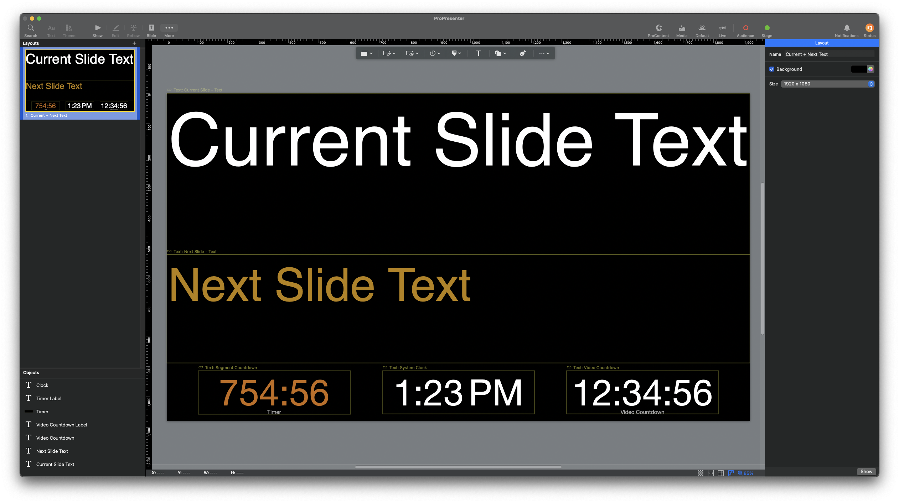
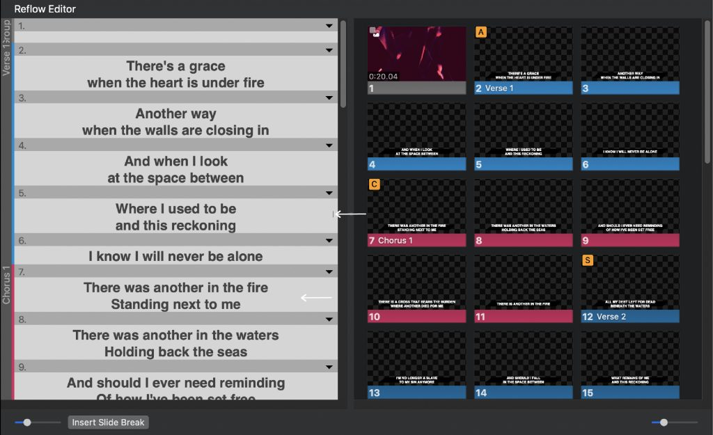
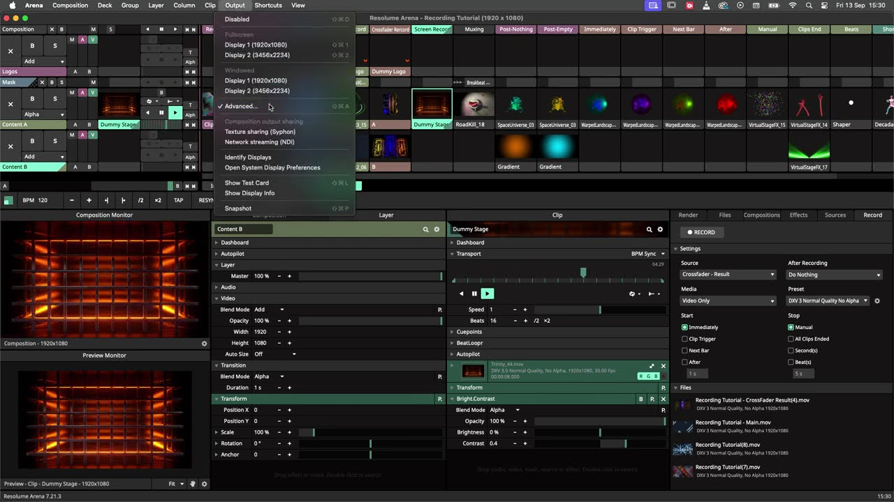
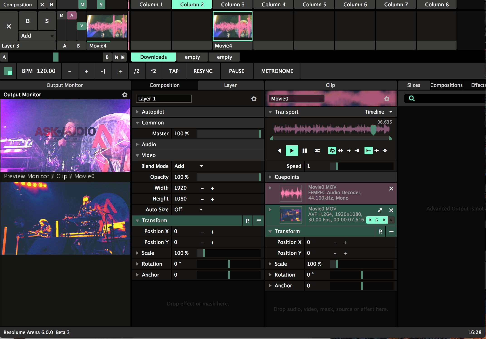

Chapter One
What is Resolume?
Optimized for video
ProPresenter is built around presentation: lyrics, scripture, teleprompter text, stage displays. Resolume is built around video: live visuals, mixing, and projection in real time.


ProPresenter thinks in slides and cues. Resolume thinks in layers, clips, and live inputs, more like a video mixing desk than a presentation deck.


Put together, the two tools sit side by side in the signal chain: Resolume handles slides, the live stream, and media, then hands text and a confidence monitor feed back to ProPresenter over NDI for the teleprompter.